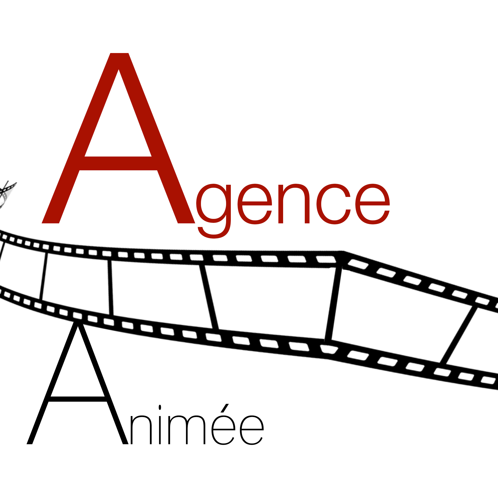
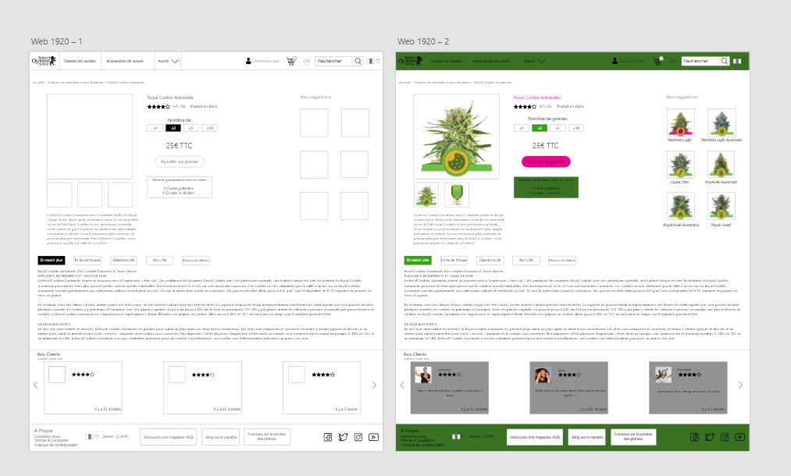
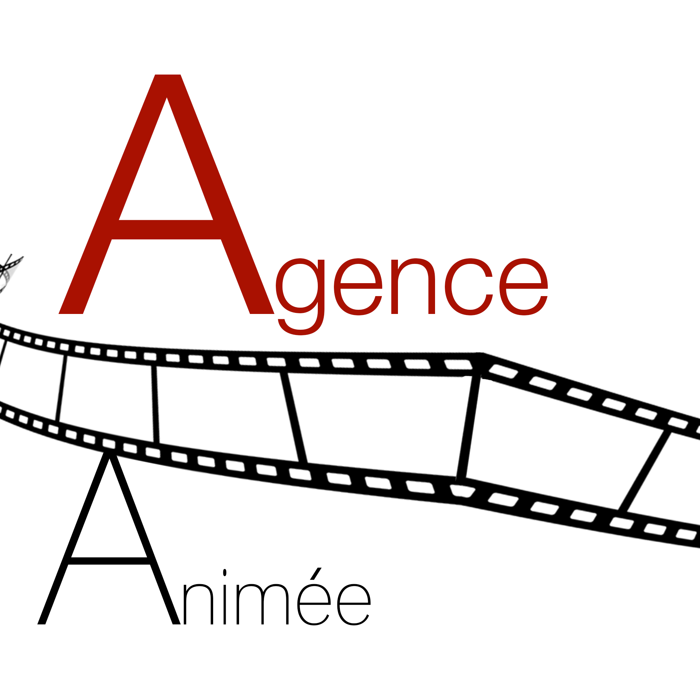
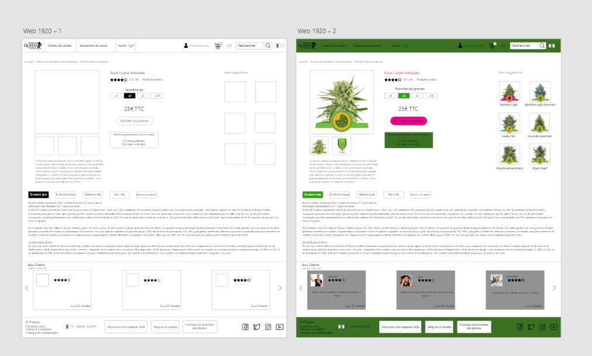
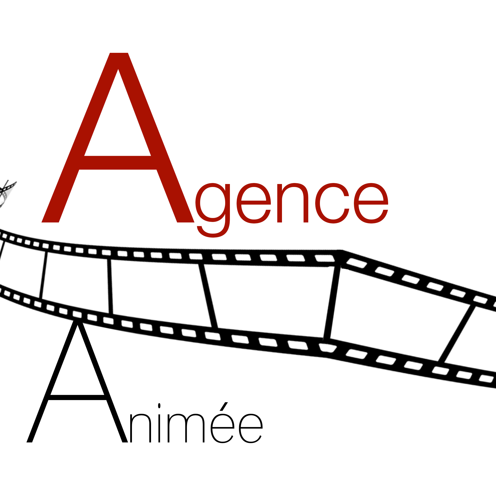
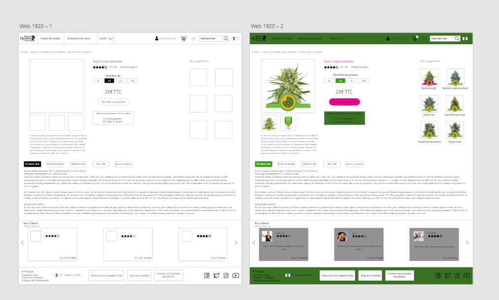

Raphaël
Agostini
De loin le plus gros projet que j'ai mené, l'organisation du tournoi pour le lancement du jeu Super Smash Bros Ultimate sur Nintendo Switch le 7 décembre 2018. Un projet qui s'est étendu sur 3 mois d'organisation pour mener à une journée très chargée mais qui reste encore aujourd'hui mémorable. J'ai perçu ce projet comme un défi que je me suis lancé à moi, j'ai géré la communication, l'organisation et le déroulement du tournoi. Beaucoup de personnes venues de toute l'Ile de France ont participé. Ce fut un défi de préparer le tournoi car j'ai du apprendre à gérer le flux de personnes qui s'aggrandissait toujours plus mais je n'ai pas faiblit et j'ai accompli un énorme travail. Je fournis ici même le dossier qui résume tout ce qui a été accompli pour le tournoi.
Télécharger le dossier du tournoi.


| Les héros et la thèse du monomythe Ce fut un projet d'étude lors de mon année de grande école cependant la particularité de ce projet est que nous devions le préparer comme une grande conférence avec des affiches, des spots vidéos comme audios et la réalisation d'une frise chronologique physique. Un projet qui a demandé beaucoup en travail d'équipe et gestion. |
Mise en place d'un plan social media Ceci était l'un des premiers projets de mon année WebMarketing. Avec mes collègues nous avons mis en place un plan social media pour aider une startup à avoir une meilleure influence sur ses différents réseaux. Cela est allé de la mise en place de publications à la création d'un planning éditorial. |
L'agence animée Le meilleur projet que j'ai mené durant mon année de Grande Ecole. Avec mes collègues nous avions créé une agence de communication événementiel qui avait pour but de s'occuper de la refonte d'un grand magasin monomarque. Le tout allait avec la mise en place d'une campagne de communication pour la marque tout comme l'agence et la conception en 3D du magasin. |
Refonte UX d'un site Un des projets les plus intéressant de mon année de WebMarketing, avec mes collègues nous avons créé des maquettes pour la refonte UX d'un site commercial, le but était donc d'améliorer le processus d'achat afin de le rendre plus fluide, direct et lisible et de permettre à plus de personnes de pouvoirs acheter sur le site. |